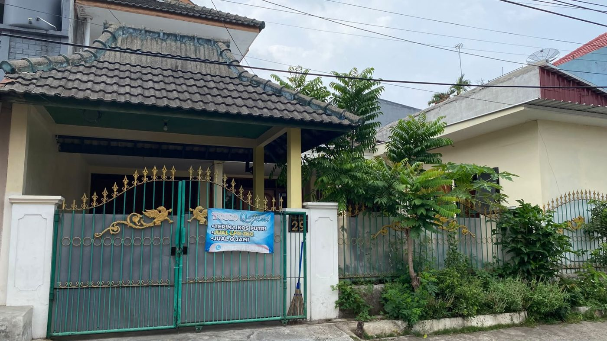
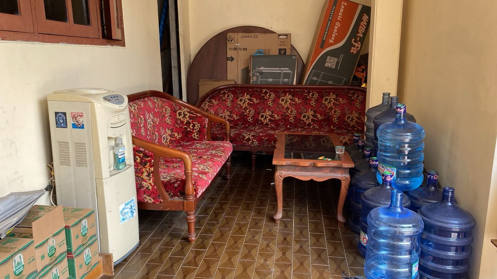
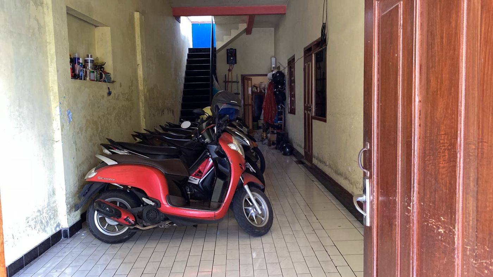

Tentang Kos Bu Nining
Hunian kos yang tenang, aman, dan nyaman di Malang.



Fasilitas & Keunggulan
- Lokasi strategis dekat kampus, minimarket, dan tempat makan
- Keamanan dengan pagar terkunci dan CCTV
- Wi-Fi, dapur bersama, dan area jemuran
- Area bersama dibersihkan rutin